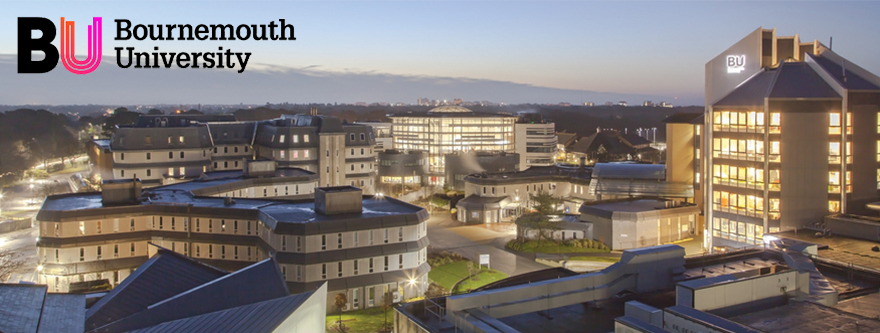

Acasă
Acasă Țări
Țări Catalog
Catalog Galerie foto
Galerie foto Experiente
Experiente Despre
DespreBournemouth University



Descriere
Bournemouth University se situeaza pe coasta de sud a Angliei, la numai doua ore cu trenul de Londra. Orasul este renumit ca destinatie de vacanta, pentru plaja lunga de 15km, privelistile incantatoare de la malul marii si pentru parcurile si gradinile sale.
La universitate sunt inscrisi peste 17 300 de studenti, dintre care 2 000 sunt studenti internationali din peste 120 de tari.
Bournemouth University isi doreste sa ofere un program care sa se deosebeasca de toate celelalte prin excelenta academica sustinuta prin calitatea serviciilor oferite. Astfel, prin imbinarea cercetarii cu studiul si practica profesionala, universitatea ofera o experienta academica unica. In desfasurarea procesului de invatare, se pune accentul e inspiratia studentilor, cercetare la nivel ridicat si pe analiza ultimelor notiuni din domeniu.
Informații generale
Tara: Marea Britanie
Limba de predare: engleza
Inceput an: septembrie
Burse: Da
Campusuri: Talbot; Lansdowne
Aeroporturi: Londra
Taxe pentru 2018/2019: 97-195 £/saptamana. Se poate alege dintre camere tip studio, pentru o singura persoana sau comuna, cu baie comuna sau privata, bucatarie comuna sau privata. Exista optiuni si cu o masa pe zi inclusa in pretul cazarii.
Programe de licență:
BA (Hons) Finance and Business
BA (Hons) Accounting and Taxation
BA (Hons) Finance and Law
MAccFin (Hons) Accounting and Finance
BA (Hons) Finance and Economics
BA (Hons) Economics
BA (Hons) Accounting and Finance
BA (Hons) Accounting and Business
BA (Hons) International Finance
BA (Hons) Accounting and Law
Business, Management & Marketing:
BA (Hons) Business Studies
BA (Hons) Business Studies with Economics
BA (Hons) Business Studies with Enterprise
BA (Hons) Marketing Communications
BA (Hons) Business Studies with Finance
BA (Hons) Business Studies with Human Resource Management
BA (Hons) Business Studies with Law
BA (Hons) Business Studies with Operations & Project Management
BA (Hons) Business Studies with Marketing
BA (Hons) International Business Studies
BA (Hons) Retail Management
BA (Hons) International Management
BA (Hons) Business and Management
BSc (Hons) Marketing
BA (Hons) International Business & Management
Computer Animation & Visual Effects
BSc (Hons) Software Development for Animation Games and Effects
BA (Hons) Computer Animation Arts
BA (Hons) Computer Visualisation and Animation
Computing & Information Technology
BSc (Hons) Business Information Technology
BSc (Hons) Cyber Security Management
BSc (Hons) Computer Networks
BSc (Hons) Information Technology Management
BSc (Hons) Software Engineering
BSc (Hons) Computing
BSc (Hons) Forensic Computing and Security
Design & Engineering
BEng (Hons)/MEng (Hons) Engineering (Part-time)
BSc (Hons) Design Engineering
BA (Hons) Product Design
BA (Hons) Industrial Design
BEng/MEng (Hons) Mechanical Engineering
MDes (Hons) Product Design
BSc (Hons) Product Design
Games & Music Technology
BSc (Hons) Games Programming
BSc (Hons) Games Technology
BSc (Hons) Music and Audio Technology
BSc (Hons) Music and Sound Production Technologt
Health & Social Care
BSc (Hons) Paramedic Science
BSc (Hons) Children's and Young People's Nursing
Diploma of Higher Education Operating Department Practice
BSc (Hons) Nutrition
BSc (Hons) Mental Health Nursing
BSc (Hons) Physiotherapy
BSc (Hons) Clinical Exercise Science
BA (Hons) Social Work
BSc (Hons) Occupational Therapy
BSc (Hons) Adult Nursing
BSc (Hons) Midwifery
History, Politics & Social Studies
BA (Hons) Sociology and Anthropology
BA (Hons) Politics
BA (Hons) Sociology
BSc (Hons) Anthropology
BA (Hons) Sociology and Criminology
BA (Hons) History
Law
LLB (Hons) Law with Economics
BA (Hons) Finance and Law
BA (Hons) Business Studies with Human Resource Management
LLB (Hons) Business Law
BA (Hons) Business Studies with Law
LLB (Hons) Law
LLB (Hons) Law & Taxation
LLB (Hons) Entertainment Law
BA (Hons) Law
BA (Hons) Accounting and Law
Media & Communication
BA (Hons) Multimedia Journalism
BA (Hons) Marketing Communications
BA (Hons) Advertising
BA (Hons) Communication and Media
BA (Hons) Digital Media Design
BA (Hons) Photography
BA (Hons) Media Production
BA (Hons) Film Production and Cinematography
BA (Hons) Public Relations
BA (Hons) Film
BA (Hons) English
BA (Hons) Scriptwriting for Film and Television
BA (Hons) Radio
BSc (Hons) Marketing
MLit (Hons) English
BA (Hons) Television Production
Sciences
BSc (Hons) Archaeology
BSc (Hons) Marine Ecology and Conservation
BSc (Hons) Psychology
BA (Hons) Archaeology and Anthropology
BSc (Hons) Ecology & Wildlife Conservation
BSc (Hons) Archaeological and Forensic Sciences
BSc (Hons) Forensic Investigation
BSc (Hons) Geography
BSc (Hons) Forensic Biology
BSc (Hons) Biological Sciences
BSc (Hons) Forensic Science
BSc (Hons) Environmental Science
Sport
BSc (Hons) Sports Psychology and Coaching Sciences
BSc (Hons) Sport Development & Coaching Sciences
BSc (Hons) Sports Management (Golf)
BSc (Hons) Sports Management
Tourism, Hospitality & Events
BA (Hons) Events Management
BA (Hons) International Hospitality Management
BA (Hons) Tourism Management
BA (Hons) International Hospitality & Tourism Management
BA (Hons) Events and Leisure Marketing
Programe de masterat:
Accounting, Finance & Economics
Business, Management & Marketing
Computer Animation & Visual Effects
Computing & Information Technology
Design & Engineering
Games & Music Technology
Health & Social Care
Law
Media & Communication
Sciences
Social Studies
Sport
Tourism, Hospitality & Events
Archaeology
Anthropology
Forensic Science
Advertising
Multimedia
Journalism
Foundation (unele dintre aceste programe se desfasoara in parteneriat cu alte colegii partenere Bournemouth University):
Business, Marketing and Management
Computer Animation
Computer and Business Information Technology
Engineering
Technology (Electronics/Electrical)
Tourism and Hospitality